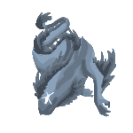

You have hatched a Northern Dragon!
The Northern Dragon is reserved and isolated. This dragon feeds mostly on the cold tundra plants in which it lives.
It will also feed on any animals that are in the dragon's habitat. In order to have a successful bonding trial with
this dragon, you will have to first let it in, allowing it to feel safe and cared for around you. You will need a
decently large room to keep them in, as they grow to be around 10 meters.
For more information, click here!
Click Here to go to your homepage!